What we build
Production-ready systems,
engineered from the ground up
Every project is planned, built in modules, and tested before delivery.
No shortcuts. No demos. Systems that go live and stay live.
01
Custom web systems & platforms
We build multi-role web applications, member portals, SaaS platforms, and subscription-based systems from the ground up. Every system is designed before a single line of code is written — with clear user roles, defined data flows, and a secure backend architecture that holds up under real usage.
- Multi-role access systems (admin, member, commissioner, super admin)
- Subscription and payment-gated content
- Invitation-based onboarding flows
- Engagement tracking and participation management
- Automated email delivery and notifications
Best for — Companies building a product, organisations needing a private portal, or businesses replacing a manual process with software.
See it in action — IPSA membership platform →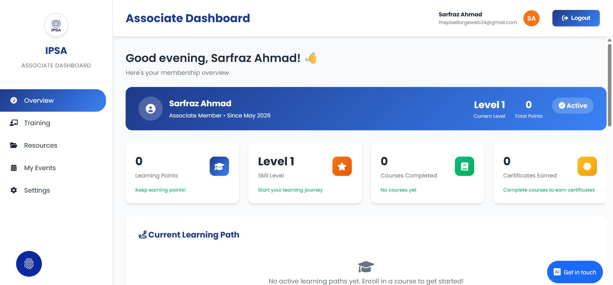
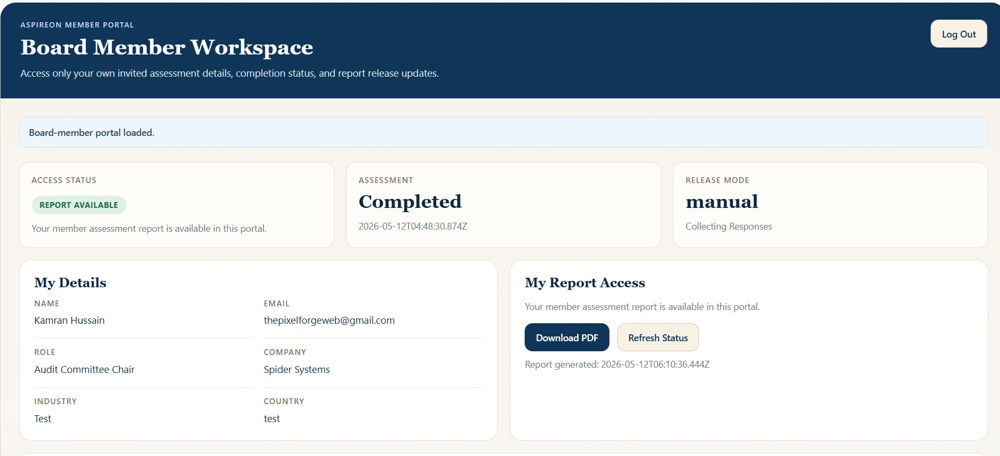
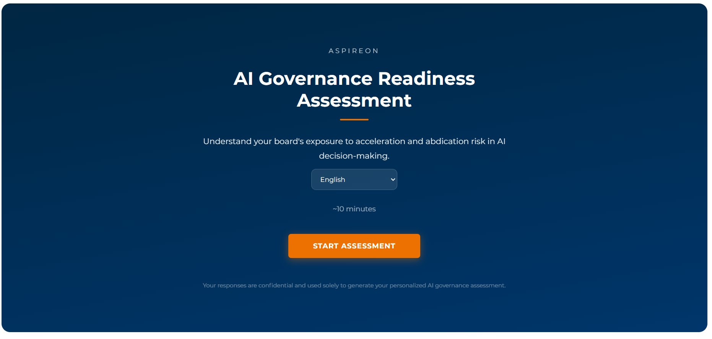
02
Dashboards & admin tools
Your team needs visibility and control — without relying on a developer every time something needs to change. We build internal dashboards that let your admins manage users, track engagement, bulk-upload data, generate reports, and release content — all from a clean, purpose-built interface.
- Super admin and multi-commissioner dashboards
- Engagement and participation tracking
- Bulk operations and data management
- Audit trails: every action logged and visible
- Report generation and controlled release workflows
- Role-specific views — each user sees only what they need
Best for — Organisations running recurring processes, platforms with multiple user types, or teams that need operational oversight without technical knowledge.
See it in action — Aspireon commissioner dashboard →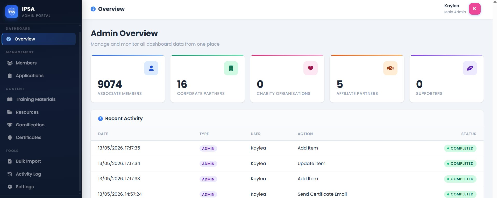
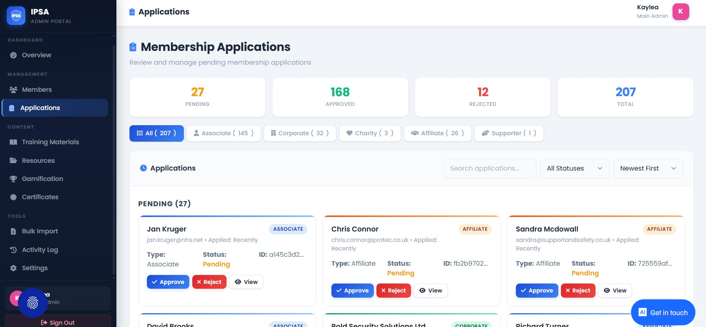
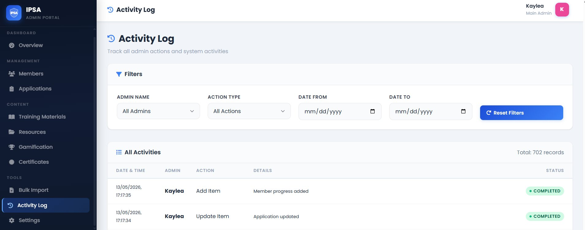
03
Our specialityAI build rescue & production delivery
AI coding tools can get a project 60% of the way there. But production-ready software requires proper architecture, a secure backend, separated concerns, and systematic testing. If your AI-generated codebase is broken, insecure, or stuck before launch — we take over.
What this looks like in practice
- —Your AI-generated codebase has database queries running on the frontend
- —Sensitive logic is exposed in client-side code
- —The system works locally but breaks in production
- —Features are built but not connected properly
- —You've hit a wall and don't know how to move forward
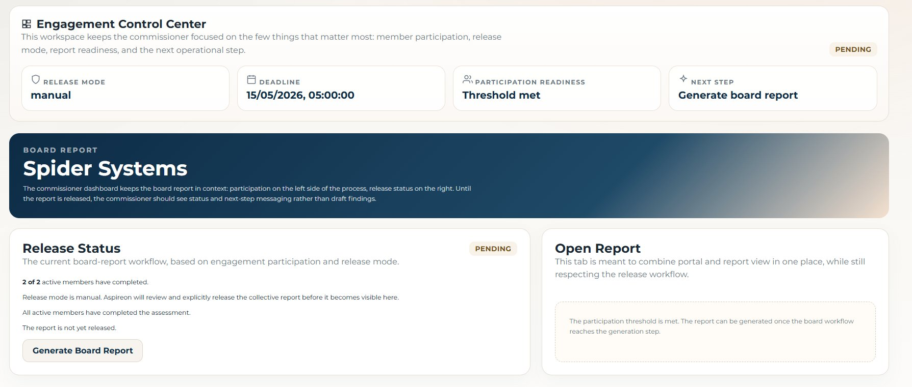
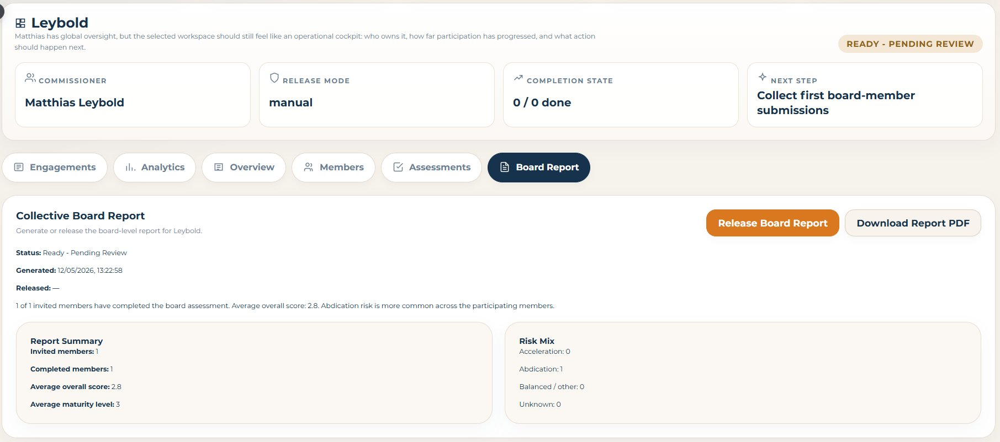
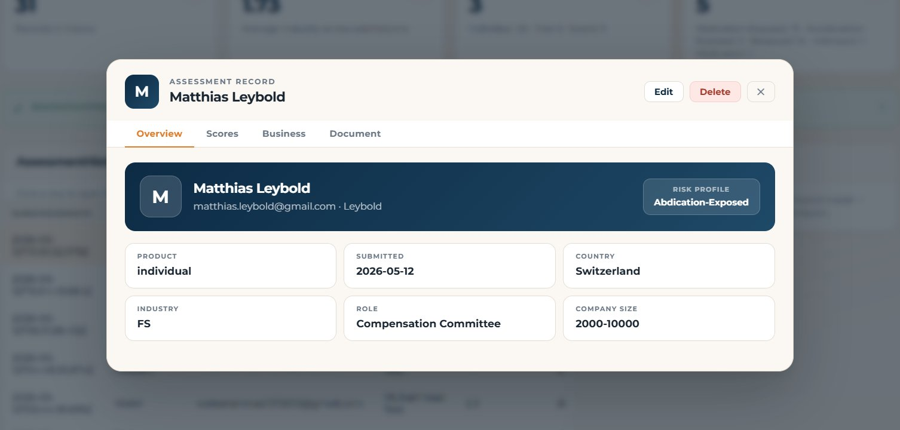
01 - Diagnose
Full audit of the existing codebase — database exposure, auth gaps, missing backend separation, deployment blockers, and insecure API calls.
02 - Rebuild
All logic moves server-side. Database secured. API endpoints restructured. Frontend cleaned up and separated from the data layer. Features completed module by module.
03 - Deploy
Production deployment with proper environment setup, bug fixing, testing, and full handover with documented, working code you can maintain.
04
Assessment & reporting systems
We build multi-tier assessment platforms with automated scoring, intelligent report generation, and role-based dashboards. Whether it's a governance assessment, a qualification tool, or a performance review system — we engineer the full flow from question to PDF report.
- Multi-tier assessments (free, individual paid, board-level)
- Role-specific question sets and scoring logic
- Automated maturity scores and risk classification
- Individual and collective PDF report generation
- Commissioner dashboards for managing invitations and tracking completion
- Controlled report release workflows (manual or automatic)
Best for — Consultancies, research organisations, professional bodies, or any business that needs to assess, score, and report on its users or clients at scale.
See it in action — Aspireon board AI assessment platform →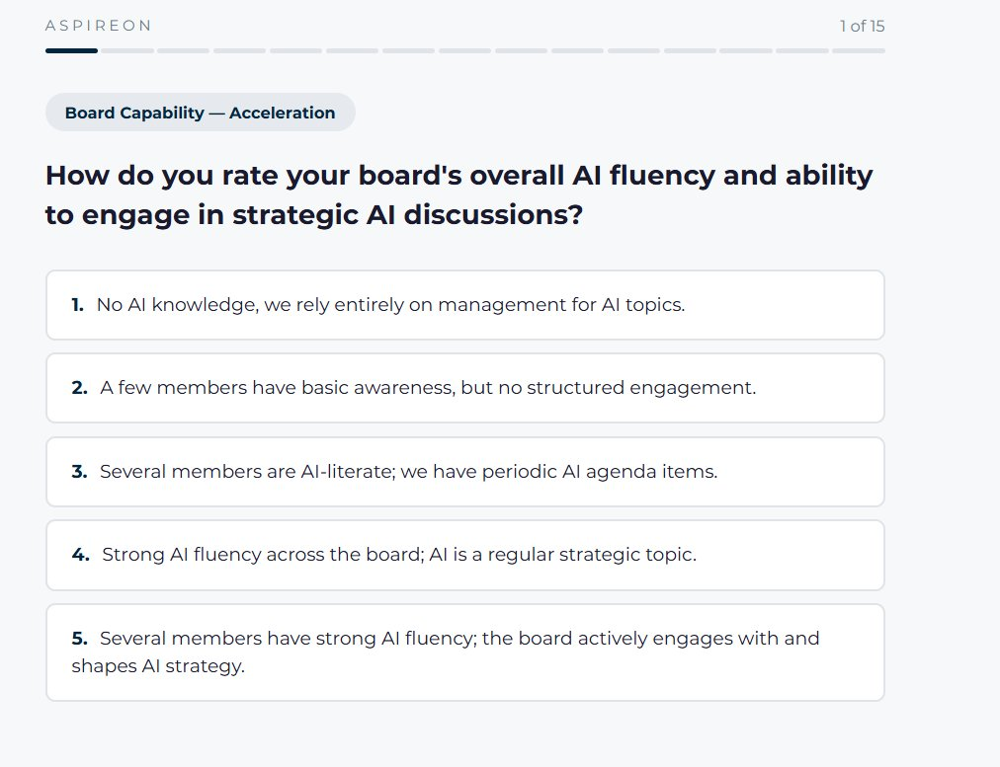
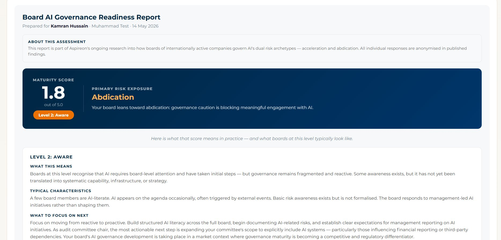
Our process
How we work
Discovery
We understand your problem before writing a line of code.
Plan
Every feature is mapped as a module before building starts.
Build
We build and test module by module, never all at once.
Deliver
Full handover with clean, documented, production-ready code.